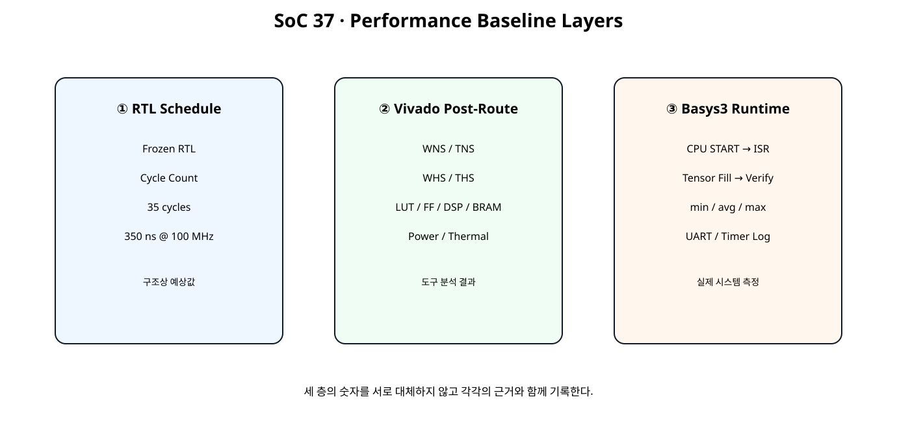
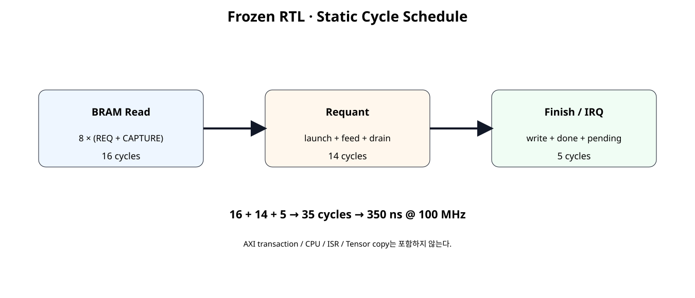
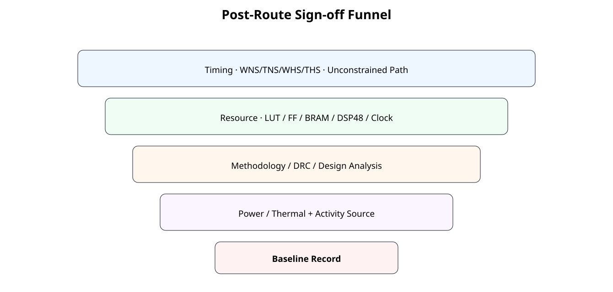

전체 학습 위치
이번 장의 목표

원본 보기 ↗
Group 8 시작
Group 7이 “동작하는 NPU SoC”를 만드는 과정이었다면 Group 8은 “얼마나 잘 동작하는가”를 수치로 판단하는 과정이다.
측정의 세 층
원본 보기 ↗
Hardware Freeze
Static Cycle Schedule

원본 보기 ↗
35 Cycle 분해
| 구간 | Cycle | 원인 |
|---|---|---|
| BRAM Read | 16 | 8 Word × READ_REQ/READ_CAPTURE |
| Requant | 14 | Launch + 8-item Feed + Pipeline Drain |
| Finish / IRQ | 5 | Result Handoff + 2 Write + DONE + IRQ Latch |
| Total | 35 | Frozen RTL Static Schedule |
100 MHz 환산
350 ns는 RTL 상태 진행에서 계산한 예상 시간이며 Routing Delay나 CPU 관측 Latency를 의미하지 않는다.
Static Upper Bound
SoC37 STATIC RTL SCHEDULE
clock = 100 MHz (10.0 ns)
BRAM read phase = 16 cycles
requant phase = 14 cycles
finish/IRQ phase = 5 cycles
engine START accept -> IRQ pending = 35 cycles
static schedule time = 350.0 ns
upper-bound jobs/s = 2,857,142.857
upper-bound scalar outputs/s = 22,857,142.857
IMPORTANT:
- This excludes AXI START transaction latency.
- This excludes CPU Tensor fill/read.
- This excludes ISR/software overhead.
- This is not WNS/TNS or post-route timing.
- Actual performance must be measured in Vivado/board.
SOC37 STATIC PERFORMANCE REFERENCE: PASS
Spreadsheet runtime warmup failed during python startup
Traceback (most recent call last):
File "/tmp/tmp.L2TH2Y5coc/artifact_tool_v2-2.8.22/artifact_tool/patches/warm_spreadsheet_runtime_on_startup.py", line 26, in warm_spreadsheet_runtime_on_startup
File "/tmp/tmp.L2TH2Y5coc/artifact_tool_v2-2.8.22/artifact_tool/spreadsheet_warmup.py", line 772, in warm_spreadsheet_runtime
File "/tmp/tmp.L2TH2Y5coc/artifact_tool_v2-2.8.22/artifact_tool/rpc/connection.py", line 37, in get_or_create_client
File "/tmp/tmp.L2TH2Y5coc/artifact_tool_v2-2.8.22/artifact_tool/rpc/daemon.py", line 124, in start_daemon
TimeoutError: Timed out waiting for artifact tool daemon socket. Set ARTIFACT_TOOL_RPC_DAEMON_STARTUP_TIMEOUT_S=<seconds> to increase the limit.
왜 실측 Throughput이 아닌가
이 계산에는 AXI START Transaction, Tensor Fill/Read, Interrupt Controller, ISR, 다음 Descriptor 준비가 없다. 따라서 실제 CPU↔NPU 처리량보다 높은 구조상 상한값이다.
Timing Sign-off

원본 보기 ↗
WNS / TNS
Setup 분석에서는 WNS(Worst Negative Slack, 최악의 음수 여유)와 TNS(Total Negative Slack, 전체 음수 여유)를 확인한다. 목표 Clock을 만족하려면 최종 구현 결과에서 Setup Violation이 없어야 한다.
WHS / THS
Hold 분석도 별도로 확인한다. Setup이 PASS라도 Hold Violation이 있으면 Timing Sign-off가 아니다.
Unconstrained Path
Slack 값만 양수라고 끝내지 않는다. Clock/Path Constraint가 빠진 경로가 없는지 함께 확인한다.
Report Timing Summary
AMD UG906은 Post-Implementation 단계의 Report Timing Summary를 Timing Sign-off 확인에 사용하는 핵심 Report로 설명한다.
Resource Baseline
Hierarchical Utilization
report_utilization -hierarchical로 전체 숫자뿐 아니라 NPU 내부 어떤 Hierarchy가 Resource를 소비하는지 확인한다.
Clock Utilization
Clock Primitive, Clock Net, Load를 확인해 Clock 자체가 Placement/Timing 문제의 원인인지 구분한다.
DSP / BRAM
DSP와 BRAM은 요청 Attribute가 아니라 실제 구현 Report를 기준으로 기록한다. Isolated NPU에서는 외부 Tensor BRAM이 포함되지 않으므로 Full SoC Resource와 구분한다.
Design Analysis
report_design_analysis로 Critical Path의 Logic Level과 Interconnect 특성을 확인한다. 다음 장의 구조 개선 후보를 고르는 근거로 사용한다.
Methodology / DRC
Timing이 우연히 PASS해도 Methodology Warning과 DRC를 그대로 방치하지 않는다. Critical Warning부터 원인을 확인한다.
Power Baseline
Power는 하나의 숫자만 적지 않고 Total, Dynamic, Static, Junction Temperature, Supply Current를 함께 기록한다.
Vectorless Power
Activity 정보가 없으면 Vivado의 Vectorless 추정이 사용될 수 있다. 이것은 비교용 초기 Baseline으로 사용할 수 있지만 실제 보드 소비전력으로 표현하지 않는다.
SAIF / Activity
Simulation Activity 파일이나 사용자 Activity를 제공하면 Power 분석의 근거가 개선된다. Activity Source를 결과표에 반드시 기록한다.
Thermal / Supply
Ambient, Airflow, Heat Sink, Supply Voltage 같은 환경 조건이 Power/Thermal 추정에 영향을 주므로 Report와 함께 기록한다.
Isolated NPU Baseline
NPU IP만 OOC Post-Route하여 NPU 자체의 Timing/Resource를 확인한다. MicroBlaze V, AXI BRAM Controller, Tensor BMG는 포함하지 않는다.
Full SoC Baseline
실제 SoC Project의 impl_1을 Open한 뒤 별도 Collector Script로 전체 시스템 Timing/Resource/Power를 기록한다.
Cycle Regression
JOB1 → 35 cycles
두 Job 모두 같은 Cycle Schedule을 유지하는지 Self-Checking Testbench에서 확인한다.
JOB0 / JOB1
입력 데이터와 BRAM Offset은 달라도 Hardware State Schedule은 동일해야 한다. 데이터 값과 제어 Latency를 분리해서 보는 연습이다.
CPU-visible Latency
Software 관점 Latency는 35 cycle보다 크다. AXI Register Write, Interrupt Controller, Exception Entry, ISR, Memory Access 시간이 추가되기 때문이다.
AXI Timer
실제 보드에서는 기존 SoC 단계에서 다룬 AXI Timer를 사용해 START→ISR 및 Tensor Fill→Verify 구간을 측정할 수 있다.
반복 측정
UART 출력은 측정 구간 밖으로 빼서 I/O 시간이 성능 수치에 섞이지 않도록 한다.
Bottleneck 분류
| 분류 | 관찰값 |
|---|---|
| Data Movement | BRAM read/write cycle, CPU copy |
| Compute | Requant feed/drain |
| Control | Descriptor/START/IRQ |
| Timing | Critical path / interconnect |
| Resource | DSP/BRAM/LUT 압박 |
| Power | Dynamic/thermal margin |
현재 구조의 예상 Bottleneck
정적 구조만 보면 8 Word를 각각 READ_REQ → READ_CAPTURE 두 상태로 읽는 구간이 16 cycle을 사용한다. 다만 실제 최적화 우선순위는 Vivado와 보드 측정 결과를 확인한 뒤 결정한다.
Measurement Record
doc/MEASUREMENT_RECORD.md에 Timing, Resource, Power, Runtime 성능과 측정 조건을 한 곳에 기록한다.
Post-Route Tcl
# SoC 37 · Frozen NPU post-route baseline
# Target: Basys3 xc7a35tcpg236-1, 100 MHz.
# This is an isolated NPU-IP baseline, not the full MicroBlaze V system.
set script_dir [file dirname [file normalize [info script]]]
set root_dir [file normalize [file join $script_dir ".."]]
set rtl_dir [file join $root_dir "rtl"]
set out_dir [file normalize [file join $root_dir "reports" "npu_post_route"]]
file mkdir $out_dir
create_project -in_memory -part xc7a35tcpg236-1
foreach f {
requantize_s32_to_s8.v
requantize_batch2x4_serial.v
tensor_job_engine.v
npu_full_control_irq.v
axi4lite_reg_bridge.v
bram_clock_reset_adapter.v
npu_full_accelerator_ip.v
} {
read_verilog [file join $rtl_dir $f]
}
synth_design \
-mode out_of_context \
-top npu_full_accelerator_ip \
-part xc7a35tcpg236-1
create_clock \
-name s_axi_aclk \
-period 10.000 \
[get_ports s_axi_aclk]
report_methodology \
-file [file join $out_dir "01_methodology_post_synth.rpt"]
opt_design
place_design
phys_opt_design
route_design
report_timing_summary \
-delay_type min_max \
-report_unconstrained \
-max_paths 50 \
-file [file join $out_dir "02_timing_summary_post_route.rpt"]
report_utilization \
-hierarchical \
-file [file join $out_dir "03_utilization_post_route.rpt"]
report_clock_utilization \
-file [file join $out_dir "04_clock_utilization_post_route.rpt"]
report_design_analysis \
-setup \
-max_paths 50 \
-logic_level_distribution \
-file [file join $out_dir "05_design_analysis_post_route.rpt"]
report_methodology \
-file [file join $out_dir "06_methodology_post_route.rpt"]
report_drc \
-file [file join $out_dir "07_drc_post_route.rpt"]
report_power \
-file [file join $out_dir "08_power_vectorless_post_route.rpt"]
write_checkpoint \
-force \
[file join $out_dir "soc37_npu_post_route.dcp"]
puts ""
puts "SoC 37 isolated NPU post-route baseline complete."
puts "Power report uses available/default activity unless you annotate SAIF/activity."
puts "Do not treat vectorless power as board-measured power."Full System Collector
# SoC 37 · Full SoC implemented report collector
#
# Usage:
# open_project <your_project.xpr>
# open_run impl_1
# source collect_soc37_full_system_reports.tcl
#
# This script does not implement the design. It records the currently
# opened implemented design.
set script_dir [file dirname [file normalize [info script]]]
set root_dir [file normalize [file join $script_dir ".."]]
set out_dir [file normalize [file join $root_dir "reports" "full_system"]]
file mkdir $out_dir
if {[llength [get_cells -quiet]] == 0} {
error "No implemented design is open. Run open_run impl_1 first."
}
report_timing_summary \
-delay_type min_max \
-report_unconstrained \
-max_paths 100 \
-file [file join $out_dir "01_timing_summary.rpt"]
report_utilization \
-hierarchical \
-file [file join $out_dir "02_utilization_hierarchical.rpt"]
report_clock_utilization \
-file [file join $out_dir "03_clock_utilization.rpt"]
report_design_analysis \
-setup \
-max_paths 100 \
-logic_level_distribution \
-file [file join $out_dir "04_design_analysis.rpt"]
report_methodology \
-file [file join $out_dir "05_methodology.rpt"]
report_drc \
-file [file join $out_dir "06_drc.rpt"]
report_power \
-file [file join $out_dir "07_power.rpt"]
puts ""
puts "SoC 37 full-system reports collected."
puts "Record the power activity source and environment together with 07_power.rpt."
Self-Checking Testbench
`timescale 1ns / 1ps
module tb_soc37_cycle_baseline;
logic clk = 1'b0;
logic resetn = 1'b0;
logic [7:0] awaddr = 8'h00;
logic awvalid = 1'b0;
wire awready;
logic [31:0] wdata = 32'h0000_0000;
logic [3:0] wstrb = 4'h0;
logic wvalid = 1'b0;
wire wready;
wire [1:0] bresp;
wire bvalid;
logic bready = 1'b1;
logic [7:0] araddr = 8'h00;
logic arvalid = 1'b0;
wire arready;
wire [31:0] rdata;
wire [1:0] rresp;
wire rvalid;
logic rready = 1'b1;
logic cpu_mem_en_i = 1'b0;
logic [3:0] cpu_mem_we_i = 4'h0;
logic [11:0] cpu_mem_addr_i = 12'h000;
logic [31:0] cpu_mem_wdata_i = 32'h0000_0000;
wire [31:0] cpu_mem_rdata_o;
wire irq_o;
integer check_count = 0;
integer error_count = 0;
integer cycle_counter = 0;
integer engine_start_cycle = -1;
integer irq_cycle = -1;
logic engine_busy_d = 1'b0;
always @(posedge clk) begin
cycle_counter = cycle_counter + 1;
// Wait until NBA updates settle before observing DUT pulses.
#1;
if (
dut.u_npu.engine_busy &&
!engine_busy_d
) begin
engine_start_cycle = cycle_counter;
end
engine_busy_d = dut.u_npu.engine_busy;
if (
(irq_o === 1'b1) &&
(irq_cycle < 0)
) begin
irq_cycle = cycle_counter;
end
end
always #5 clk = ~clk;
npu_full_accelerator_sim_top dut (
.clk(clk),
.resetn(resetn),
.s_axi_awaddr(awaddr),
.s_axi_awvalid(awvalid),
.s_axi_awready(awready),
.s_axi_wdata(wdata),
.s_axi_wstrb(wstrb),
.s_axi_wvalid(wvalid),
.s_axi_wready(wready),
.s_axi_bresp(bresp),
.s_axi_bvalid(bvalid),
.s_axi_bready(bready),
.s_axi_araddr(araddr),
.s_axi_arvalid(arvalid),
.s_axi_arready(arready),
.s_axi_rdata(rdata),
.s_axi_rresp(rresp),
.s_axi_rvalid(rvalid),
.s_axi_rready(rready),
.cpu_mem_en_i(cpu_mem_en_i),
.cpu_mem_we_i(cpu_mem_we_i),
.cpu_mem_addr_i(cpu_mem_addr_i),
.cpu_mem_wdata_i(cpu_mem_wdata_i),
.cpu_mem_rdata_o(cpu_mem_rdata_o),
.irq_o(irq_o)
);
task automatic check_true(
input string name,
input bit condition
);
begin
check_count = check_count + 1;
if (!condition) begin
error_count = error_count + 1;
$error("CHECK FAIL: %s", name);
end else begin
$display("CHECK PASS: %s", name);
end
end
endtask
task automatic check_eq32(
input string name,
input logic [31:0] actual,
input logic [31:0] expected
);
begin
check_count = check_count + 1;
if (actual !== expected) begin
error_count = error_count + 1;
$error(
"CHECK FAIL: %s actual=0x%08h expected=0x%08h",
name,
actual,
expected
);
end else begin
$display(
"CHECK PASS: %s = 0x%08h",
name,
actual
);
end
end
endtask
task automatic axi_write(
input [7:0] address,
input [31:0] data,
input integer order
);
bit aw_done;
bit w_done;
integer timeout;
begin
aw_done = 0;
w_done = 0;
@(negedge clk);
awaddr = address;
wdata = data;
wstrb = 4'hF;
case (order)
0: begin
awvalid = 1'b1;
wvalid = 1'b1;
end
1: begin
awvalid = 1'b1;
wvalid = 1'b0;
end
default: begin
awvalid = 1'b0;
wvalid = 1'b1;
end
endcase
timeout = 0;
while (!(aw_done && w_done)) begin
@(posedge clk);
// (변경) READY가 갱신되기 전 상승 에지의 handshake를 관측한다.
if (awvalid && awready)
aw_done = 1;
if (wvalid && wready)
w_done = 1;
@(negedge clk);
if (aw_done)
awvalid = 1'b0;
if (w_done)
wvalid = 1'b0;
if (
(order == 1) &&
aw_done &&
!w_done
)
wvalid = 1'b1;
if (
(order == 2) &&
w_done &&
!aw_done
)
awvalid = 1'b1;
timeout = timeout + 1;
if (timeout > 40)
$fatal(1, "AXI write timeout");
end
timeout = 0;
while (!bvalid) begin
@(posedge clk);
#1;
timeout = timeout + 1;
if (timeout > 40)
$fatal(1, "AXI BVALID timeout");
end
check_true(
"BRESP OKAY",
bresp == 2'b00
);
@(posedge clk);
#1;
end
endtask
task automatic axi_read(
input [7:0] address,
output [31:0] data
);
integer timeout;
begin
@(negedge clk);
araddr = address;
arvalid = 1'b1;
timeout = 0;
while (!arready) begin
@(posedge clk);
#1;
timeout = timeout + 1;
if (timeout > 40)
$fatal(1, "AXI ARREADY timeout");
end
@(posedge clk);
#1;
timeout = 0;
while (!rvalid) begin
@(posedge clk);
#1;
timeout = timeout + 1;
if (timeout > 40)
$fatal(1, "AXI RVALID timeout");
end
data = rdata;
check_true(
"RRESP OKAY",
rresp == 2'b00
);
@(negedge clk);
arvalid = 1'b0;
@(posedge clk);
#1;
end
endtask
task automatic mem_write32(
input [11:0] address,
input [31:0] data
);
begin
@(negedge clk);
cpu_mem_en_i = 1'b1;
cpu_mem_we_i = 4'hF;
cpu_mem_addr_i = address;
cpu_mem_wdata_i = data;
@(posedge clk);
#1;
@(negedge clk);
cpu_mem_en_i = 1'b0;
cpu_mem_we_i = 4'h0;
cpu_mem_addr_i = 12'h000;
cpu_mem_wdata_i = 32'h0000_0000;
end
endtask
task automatic mem_read32(
input [11:0] address,
output [31:0] data
);
begin
@(negedge clk);
cpu_mem_en_i = 1'b1;
cpu_mem_we_i = 4'h0;
cpu_mem_addr_i = address;
@(posedge clk);
#1;
@(negedge clk);
cpu_mem_en_i = 1'b0;
cpu_mem_addr_i = 12'h000;
data = cpu_mem_rdata_o;
end
endtask
task automatic wait_irq_high;
integer timeout;
begin
timeout = 0;
while (irq_o !== 1'b1) begin
@(posedge clk);
// (변경) 같은 시각의 #1 성능 모니터보다 뒤에서 IRQ를 관측한다.
#2;
timeout = timeout + 1;
if (timeout > 300)
$fatal(1, "IRQ did not assert");
end
end
endtask
initial begin
reg [31:0] rd;
repeat (5) @(posedge clk);
resetn = 1'b1;
// --------------------------------------------------------
// 1. CPU fills Tensor BRAM through Port A.
// --------------------------------------------------------
mem_write32(12'h200, 32'd16);
mem_write32(12'h204, 32'd32);
mem_write32(12'h208, 32'd48);
mem_write32(12'h20C, 32'd64);
mem_write32(12'h210, 32'd32);
mem_write32(12'h214, 32'd64);
mem_write32(12'h218, 32'd96);
mem_write32(12'h21C, 32'd128);
// --------------------------------------------------------
// 2. Program descriptor / parameter / IRQ registers.
// Exercise all three AXI write channel orders.
// --------------------------------------------------------
axi_write(8'h10, 32'h0000_0200, 0);
axi_write(8'h14, 32'h0000_0300, 1);
axi_write(8'h18, 32'd8, 2);
axi_write(8'h20, 32'd0, 0);
axi_write(8'h24, 32'd4, 1);
axi_write(8'h28, 32'h0001_0001, 2);
axi_write(8'h2C, 32'h0001_0003, 0);
axi_write(8'h30, 32'hFFFD_0000, 1);
// Clear stale IRQ and status, then enable DONE/ERROR.
axi_write(8'h4C, 32'h0000_0003, 2);
axi_write(8'h00, 32'h0000_0006, 0);
axi_write(8'h48, 32'h0000_0003, 1);
axi_read(8'h04, rd);
check_true(
"descriptor valid",
(rd & 32'h8) != 0
);
// --------------------------------------------------------
// 3. START and wait for DONE IRQ.
// --------------------------------------------------------
axi_write(8'h00, 32'h0000_0001, 0);
// Wait until BUSY appears.
do begin
axi_read(8'h04, rd);
end while ((rd & 32'h1) == 0);
// Shadow changes while the active job is running.
axi_write(8'h10, 32'h0000_0400, 1);
axi_write(8'h14, 32'h0000_0500, 2);
axi_read(8'h34, rd);
check_eq32(
"ACTIVE_INPUT remains 0x200",
rd,
32'h0000_0200
);
axi_read(8'h38, rd);
check_eq32(
"ACTIVE_OUTPUT remains 0x300",
rd,
32'h0000_0300
);
wait_irq_high();
check_true(
"JOB0 static latency = 35 cycles",
(irq_cycle - engine_start_cycle) == 35
);
axi_read(8'h4C, rd);
check_true(
"DONE IRQ pending",
(rd & 32'h1) != 0
);
check_true(
"ERROR IRQ clear",
(rd & 32'h2) == 0
);
// CPU reclaims Tensor Buffer after completion.
mem_read32(12'h300, rd);
check_eq32(
"full integration OUT_CH0",
rd,
32'h2018_1008
);
mem_read32(12'h304, rd);
check_eq32(
"full integration OUT_CH1",
rd,
32'h7F7F_6333
);
axi_read(8'h0C, rd);
check_eq32(
"JOB_ID = 1",
rd,
32'd1
);
axi_read(8'h40, rd);
check_eq32(
"READ_WORD_COUNT = 8",
rd,
32'd8
);
axi_read(8'h44, rd);
check_eq32(
"WRITE_WORD_COUNT = 2",
rd,
32'd2
);
// ISR-equivalent W1C.
axi_write(8'h4C, 32'h0000_0001, 0);
repeat (2) @(posedge clk);
#1;
check_true(
"DONE W1C deasserts IRQ",
irq_o === 1'b0
);
// --------------------------------------------------------
// 4. Second complete job: same hardware, new Tensor buffer.
// --------------------------------------------------------
mem_write32(12'h400, 32'd2);
mem_write32(12'h404, 32'd4);
mem_write32(12'h408, 32'd6);
mem_write32(12'h40C, 32'd8);
mem_write32(12'h410, 32'd4);
mem_write32(12'h414, 32'd8);
mem_write32(12'h418, 32'd12);
mem_write32(12'h41C, 32'd16);
// Shadow addresses already changed to 0x400 / 0x500
// during JOB0. Keep LENGTH=8 and parameters unchanged.
axi_write(8'h18, 32'd8, 2);
axi_write(8'h00, 32'h0000_0006, 0);
axi_write(8'h4C, 32'h0000_0003, 1);
axi_write(8'h48, 32'h0000_0003, 2);
axi_read(8'h04, rd);
check_true(
"JOB1 descriptor valid",
(rd & 32'h8) != 0
);
engine_start_cycle = -1;
irq_cycle = -1;
axi_write(8'h00, 32'h0000_0001, 0);
wait_irq_high();
check_true(
"JOB1 static latency = 35 cycles",
(irq_cycle - engine_start_cycle) == 35
);
axi_read(8'h4C, rd);
check_true(
"JOB1 DONE IRQ pending",
(rd & 32'h1) != 0
);
mem_read32(12'h500, rd);
check_eq32(
"JOB1 OUT_CH0",
rd,
32'h0403_0201
);
mem_read32(12'h504, rd);
check_eq32(
"JOB1 OUT_CH1",
rd,
32'h1B15_0F09
);
axi_read(8'h0C, rd);
check_eq32(
"JOB_ID = 2 after second accepted job",
rd,
32'd2
);
axi_read(8'h40, rd);
check_eq32(
"JOB1 READ_WORD_COUNT = 8",
rd,
32'd8
);
axi_read(8'h44, rd);
check_eq32(
"JOB1 WRITE_WORD_COUNT = 2",
rd,
32'd2
);
axi_write(8'h4C, 32'h0000_0001, 1);
repeat (2) @(posedge clk);
#1;
check_true(
"JOB1 W1C deasserts IRQ",
irq_o === 1'b0
);
// --------------------------------------------------------
// 5. Integrated descriptor ERROR IRQ after two good jobs.
// --------------------------------------------------------
axi_write(8'h00, 32'h0000_0006, 1);
axi_write(8'h4C, 32'h0000_0003, 2);
axi_write(8'h48, 32'h0000_0002, 0);
axi_write(8'h10, 32'h0000_0202, 1);
axi_write(8'h14, 32'h0000_0600, 2);
axi_write(8'h18, 32'd8, 0);
axi_write(8'h00, 32'h0000_0001, 1);
wait_irq_high();
axi_read(8'h4C, rd);
check_true(
"descriptor ERROR IRQ pending",
(rd & 32'h2) != 0
);
axi_read(8'h1C, rd);
check_eq32(
"descriptor ERROR_CODE = 2",
rd,
32'd2
);
axi_read(8'h0C, rd);
check_eq32(
"rejected job keeps JOB_ID = 2",
rd,
32'd2
);
axi_write(8'h4C, 32'h0000_0002, 2);
repeat (2) @(posedge clk);
#1;
check_true(
"ERROR W1C deasserts IRQ",
irq_o === 1'b0
);
$display("");
$display("SOC37 CHECK COUNT : %0d", check_count);
$display("SOC37 ERROR COUNT : %0d", error_count);
if (error_count == 0) begin
$display("SOC37 PERFORMANCE BASELINE TEST: PASS");
end else begin
$fatal(
1,
"SOC37 PERFORMANCE BASELINE TEST: FAIL (%0d errors)",
error_count
);
end
#20;
$finish;
end
endmodule
실제 측정 전 주의
SoC38 연결
오류 점검
| 오류 | 문제 | 조치 |
|---|---|---|
| 35 cycle을 WNS로 해석 | Cycle Schedule과 Timing Slack 혼동 | 측정 층 분리 |
| Vectorless Power를 실측전력으로 기록 | Activity 근거 부족 | Activity Source 기록 |
| OOC NPU Resource를 Full SoC 값으로 사용 | MicroBlaze V/BRAM 제외 | Full System Report 별도 |
| WNS만 보고 Sign-off | Hold/Constraint/DRC 누락 | Timing Summary + Methodology |
| UART Print 포함 Latency | I/O 시간이 결과 오염 | 측정 구간 밖으로 이동 |
| 최적화 후 기준값 없음 | 개선 효과 비교 불가 | SoC37 Baseline 보존 |
SoC 37 완료 체크리스트
- [ ] SoC36 Hardware를 byte-identical하게 유지한다.
- [ ] Static Cycle, Vivado Timing, Runtime Latency를 구분한다.
- [ ] 35-cycle Static Schedule의 구성을 설명한다.
- [ ] WNS/TNS와 WHS/THS를 함께 확인한다.
- [ ] Unconstrained Path를 확인한다.
- [ ] Hierarchical Resource를 기록한다.
- [ ] Power Activity Source와 환경조건을 기록한다.
- [ ] Isolated NPU와 Full SoC 결과를 구분한다.
- [ ] JOB0/JOB1 Cycle Regression을 수행한다.
- [ ] 실제 Runtime은 AXI Timer 등으로 별도 측정한다.
- [ ] Measurement Record를 다음 최적화의 기준선으로 보존한다.
공식 문서 및 근거
| 자료 | 확인 항목 |
|---|---|
| AMD UG906 · Verifying Timing Signoff · 2026.1 | Post-Implementation Timing Sign-off |
| AMD UG906 · Report Utilization · 2026.1 | LUT/FF/BRAM/DSP 등 Resource 분석 |
| AMD UG906 · Report Design Analysis · 2026.1 | Timing Path / Interconnect / Congestion 분석 |
| AMD UG949 · Report Methodology · 2026.1 | RTL/Netlist/Constraint/Timing Methodology Check |
| AMD UG907 · Power Analysis Setup · 2026.1 | Activity / Environment / Voltage와 Power 정확도 관계 |